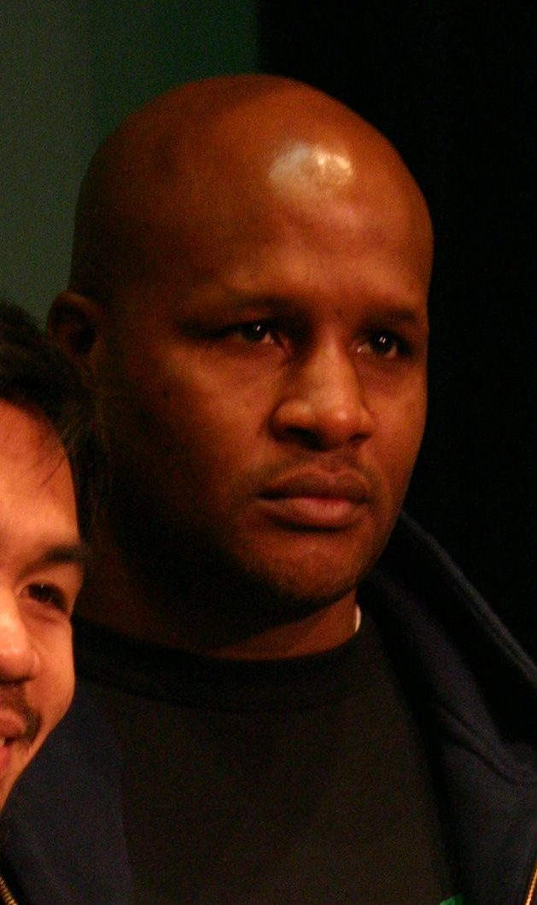

The Preacher's Punch: When 45-Year-Old George Foreman Reclaimed the Heavyweight Title
On this day in 1994, George Foreman knocked out the unbeaten Michael Moorer in the 10th round in Las Vegas to become the oldest heavyweight champion in history.

On 5 November 1994, at the MGM Grand in Las Vegas, George Foreman knocked out Michael Moorer in the 10th round to become, at 45, the oldest heavyweight champion in boxing history.
More than 12,000 spectators watched the fight, billed as "One For The Ages". Few of them expected that result.
Champion against veteran
Moorer was 26, unbeaten in 35 fights and making the first defence of the WBA and IBF titles he had won from Evander Holyfield in April 1994. He was the first left-hander to hold the heavyweight championship.
Foreman, with a record of 72 wins and 4 defeats, had been world champion once before. He won the title in 1973 by knocking out Joe Frazier in Kingston, Jamaica, and lost it to Muhammad Ali in the "Rumble in the Jungle" in Zaire in 1974. For the Moorer fight he wore the same red trunks he had worn against Ali twenty years earlier.
According to Boxing News, the WBA at first refused to sanction the fight because of Foreman's age, and he won the right to fight in court. Moorer went in as the clear favourite.
Nine rounds behind, one punch ahead
For nine rounds Moorer was the better boxer. He was faster, landed jabs and combinations, and Foreman's face showed the damage. Foreman was behind on the scorecards and needed a knockout.
In the 10th round, a short right hand to the chin put Moorer on his back. He could not get up before the count of ten. Foreman went to his corner and knelt in prayer.
He dedicated the win to "all my buddies in the nursing home and all the guys in jail," HISTORY.com reported.
The long road back
Foreman had first retired in 1977, after a defeat and what he described as a religious experience. He became a minister in Houston and founded a youth centre. He returned to the ring in 1987, at 38, saying he wanted to raise money for the centre.
The comeback included two defeats on the way: a points loss to Evander Holyfield in a world title fight in 1991 and a loss to Tommy Morrison in 1993. The Moorer fight was his third attempt to become champion again.
After the title
The reign was short in terms of belts. In 1995 the WBA stripped Foreman of its title when he declined to fight the No. 1 contender, Tony Tucker. He gave up the IBF title after refusing a rematch with Axel Schulz, whom he had beaten on a disputed decision. Foreman fought for the last time in 1997, losing to Shannon Briggs, and retired with 76 wins and 5 defeats.
Outside the ring he became one of the best-known businessmen in American sport, through the George Foreman Grill. He died in March 2025, aged 76.
Guinness World Records still lists him as the oldest heavyweight world champion. More than three decades later, the 10th round in Las Vegas remains one of the most replayed moments in boxing.